I'm Jinkyeong!
I’ve worked on diverse projects spanning social media, marketing, posters, editorials, UX/UI, exhibitions, and installations. I’m passionate about using design to solve problems and create a positive impact on society.
Throughout my career, I’ve had the opportunity to oversee projects from start to finish — first at a design and marketing agency, and later by running my own studio. I’ve handled every stage of the process, from budgeting and client communication to market research, on-site inspections, planning and strategy, design, development, and QA.
I’m currently seeking new opportunities in Vancouver, Canada.
Work Experience
Speaking & Community
Leading a Designer Community
Served as a core organizer for FDSC (Feminist Designer Social Club), a community for women designers in Korea. Shaped the organization's vision and goals while managing finances, maintaining the website, and fostering connections among members.

Improving Designer Work Culture
Organized and led workshops on legal knowledge for designers, focusing on contract and proposal writing. Also facilitated design theory and history study groups to help designers build stronger professional foundations and expand their theoretical understanding.
Teaching Web Design & Development
Taught foundational web design and development skills to designers, helping early-career professionals build their portfolios and providing ongoing mentorship as they developed their online presence.
Talk: Designing for Urban Heritage Preservation
Collaborated with Cheongyecheon Anti-Gentrification Alliance, an advocacy group opposing unplanned redevelopment in Seoul, and presented on the design process behind the project, exploring how design can support community-led urban preservation efforts.
In My Free Time
- 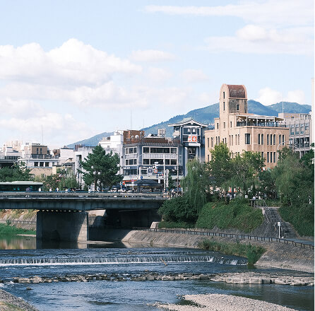
-

- 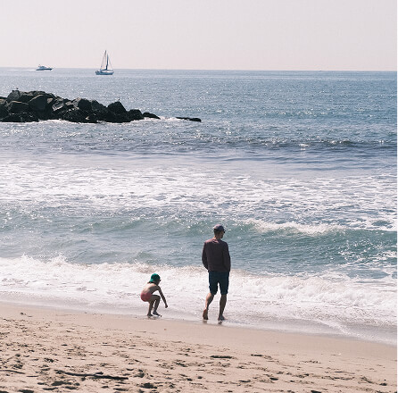
- 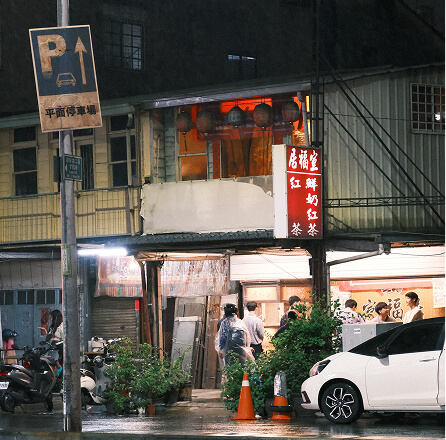
- 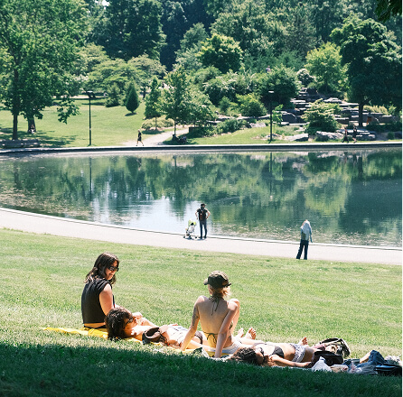
- 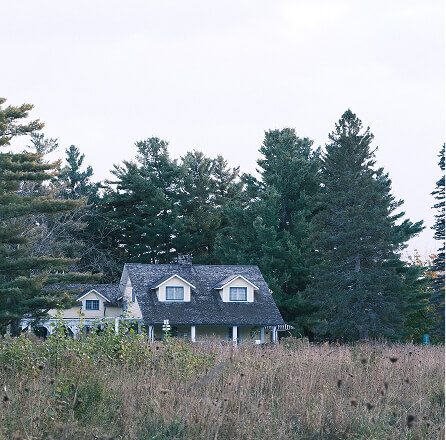
Photography
I love photography because it captures the moments I want to remember most vividly. Finding the right composition, colors, and lighting brings me joy in unexpected ways. You can see more of my work on my Instagram highlights!
Instagram- 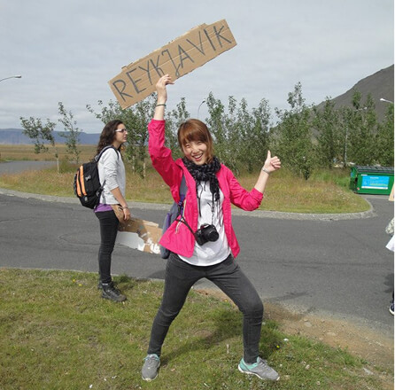
- 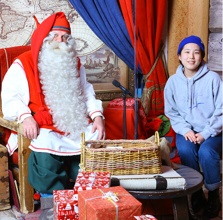
- 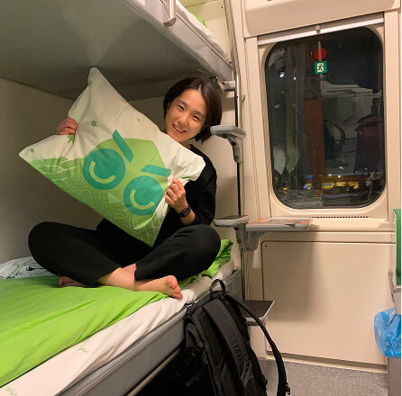
- 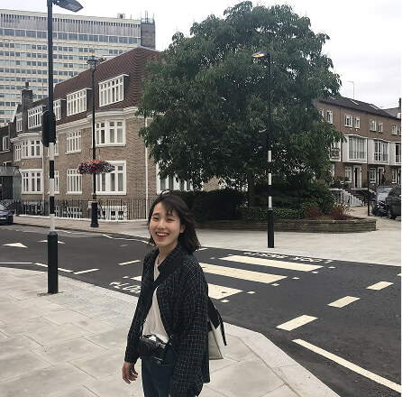
-

- 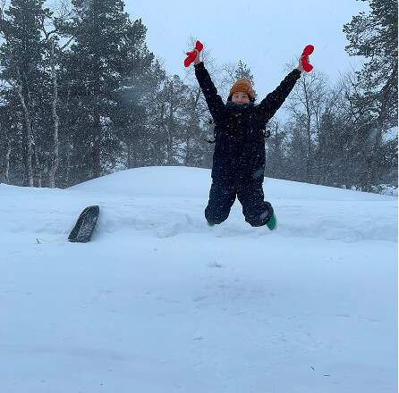
Travel
Experiencing new cultures, meeting people, and stepping into unfamiliar places gives me the energy and refresh I need to stay focused on design. From volunteering at an Icelandic work camp and in Mongolia to taking overnight trains through Finland, each adventure has become a foundation for my next challenge. Here are the places I've explored: 🇲🇳🇨🇳🇹🇼🇵🇭🇮🇸🇨🇭🇬🇧🏴🇳🇱🇫🇷🇫🇮🇬🇺🇯🇵🇺🇸 and 🇨🇦
Editing videos after each trip has become another joy of mine! Check out my travel vlogs!
Youtube- 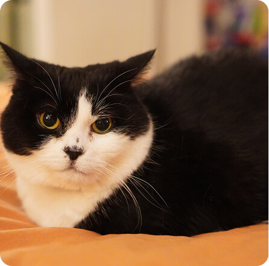
- 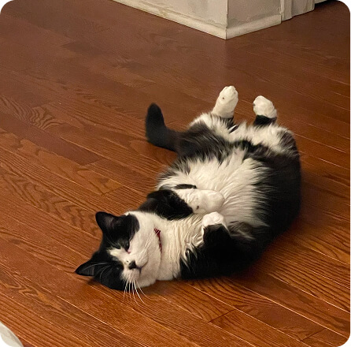
- 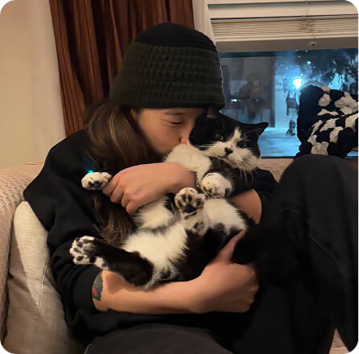
Cat Companion
About a year ago, I met my new family member—Cookie, an 11-year-old cat who came into my life like fate. I'm still learning how to live together, and every day is a new lesson in companionship.